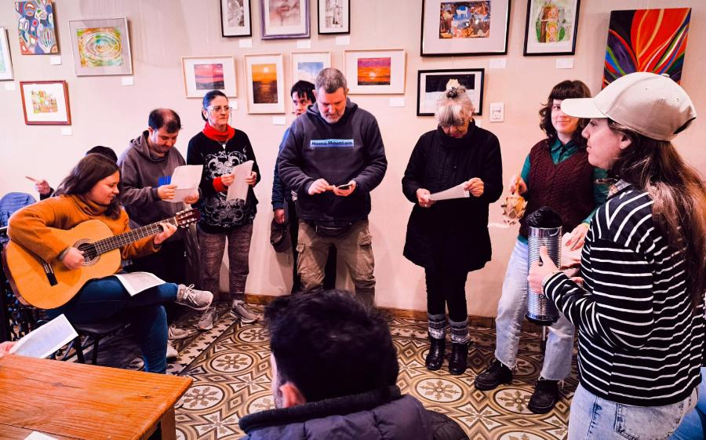
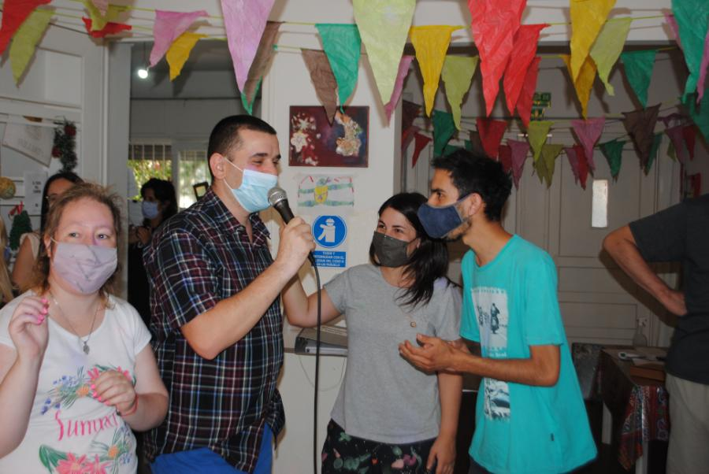
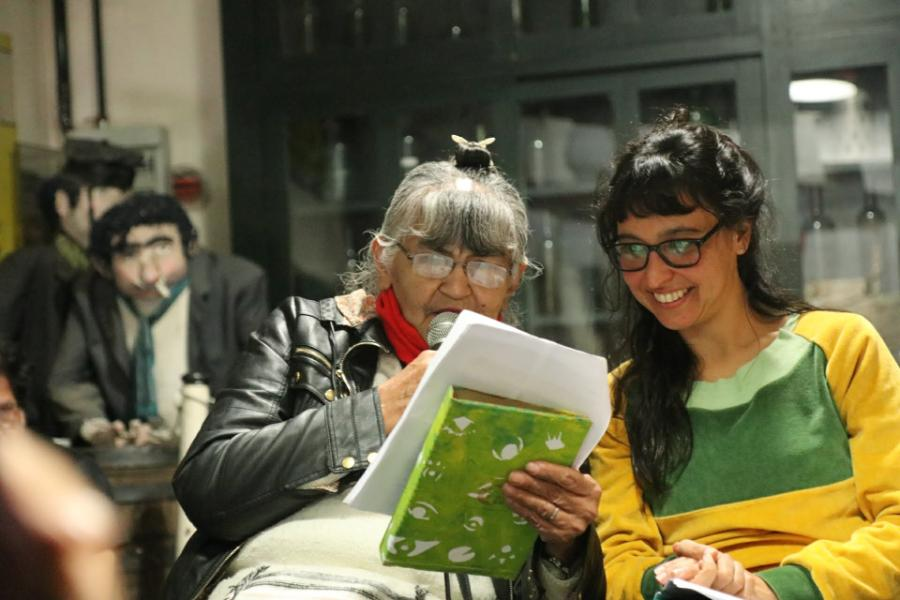

El Centro de Día se posiciona como uno de los dispositivos socio-terapéuticos de la primera línea de trabajo (terapéutico-asistencial y social-comunitaria), del proyecto institucional del Centro de Atención Psicosocial, intentando dar respuestas a las problemáticas mencionadas ya que en el contexto actual, las mismas son insuficientes o inapropiadas.
Fundamento teórico
Trabajo entre varios y libertad de circulación
El trabajo entre varios nos implica a todos más allá de nuestros roles profesionales, nuestros oficios y nuestras planificaciones. Se trata de propiciar y sostener ese proceso de subjetivación que supone siempre y al mismo tiempo, un permanente intercambio y apoyo con el medio familiar y con el entorno social.
En lo cotidiano se promueve rescatar la singularidad de cada uno de los sujetos con los que trabajamos, inmersos en una colectividad terapéutica que favorezca el encuentro con el otro, promoviéndolos de la manera en que se dan: puntuales y azarosos entre los participantes.
Propiciamos entonces la “libertad de circulación que permita el espacio del decir” (Jean Oury, 2002). No discriminamos patologías, ni limitamos el libre accionar de las personas que asisten a Casandra. Sí atendemos a las condiciones particulares que hacen a cada sujeto y a la situación en la que está inmerso, prestando suma atención a las singularidades y a las posibilidades de expresión subjetiva.
Función del Acompañante
La función es la de acompañar, función que no solo cumplen los profesionales y orientadores, sino que también es llevada a cabo por los mismos compañeros.